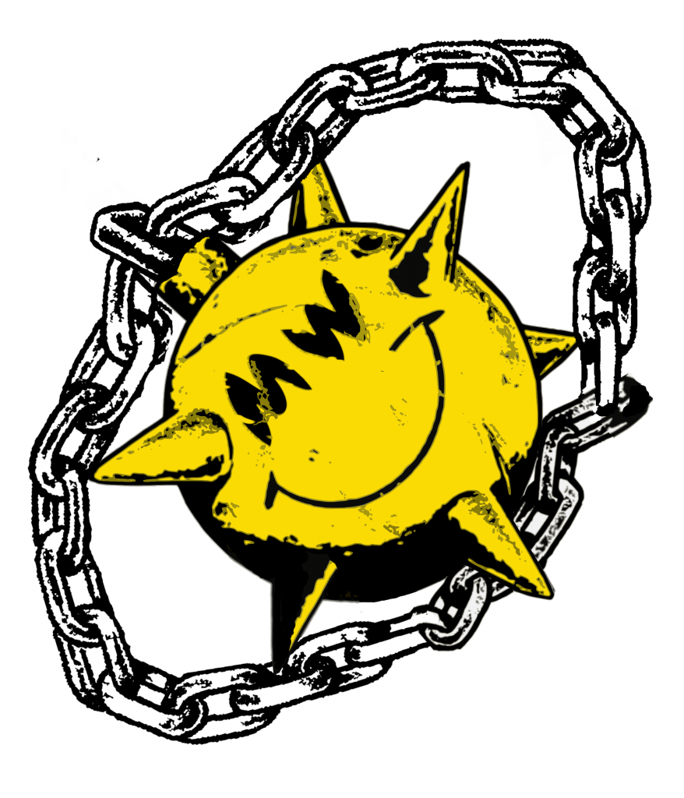

Following HA GRIN-Node API /v1 & /v2 calls are available:
Last Update: 01/2020We enabled GRIN API v2 on our high-available GRIN-Node's
example:
curl -d '{"id":"json","method":"get_status","params":{} }' -o - https://grinnode.live/v2/owner
answer:
{
"id": "json",
"result": {
"Ok": {
"connections": 121,
"protocol_version": 2,
"sync_status": "no_sync",
"tip": {
"height": 527467,
"last_block_pushed": "000001a81c92da17102079862b927134e7f8210ad56af892f494a072f5b77b92",
"prev_block_to_last": "000024005775cf7e2155d8156e514b6b1f51d98483a7bdc220a22334d2b30749",
"total_difficulty": 1456919673376722
},
"user_agent": "MW/Grin 3.1.0-beta.1"
}
}
}
1. Setup a GRIN Wallet e.g. https://github.com/mimblewimble/docs/wiki/How-to-use-the-Grin-wallet
2. Use it as API Endpoint or add it to your grin-wallet.toml
CLI:
./grin-wallet --api_server_address "https://grinnode.live:3413"
grin-wallet.toml :
check_node_api_http_addr = "https://grinnode.live:3413"
Pictures from LovelyGrin & Grinsun (https://www.grin-forum.org/t/grin-and-encouragement/5900/76)
contact: https://github.com/MCM-Mike/grinnode.live GRIN Discord: https://discord.gg/VzyfyBf (MCM-Mike)Use Blocks not Bombs
